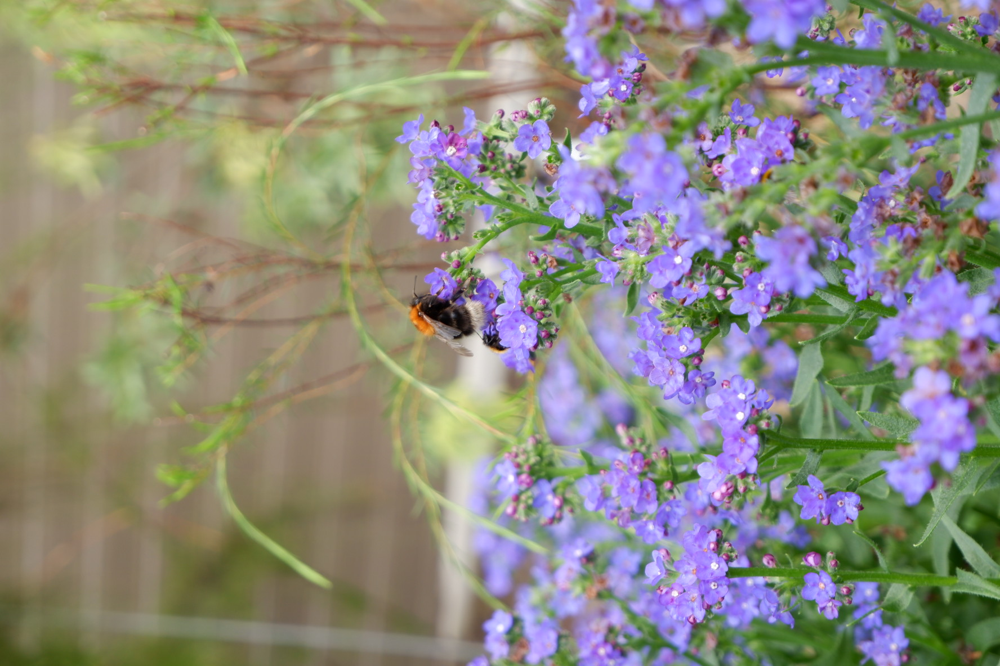
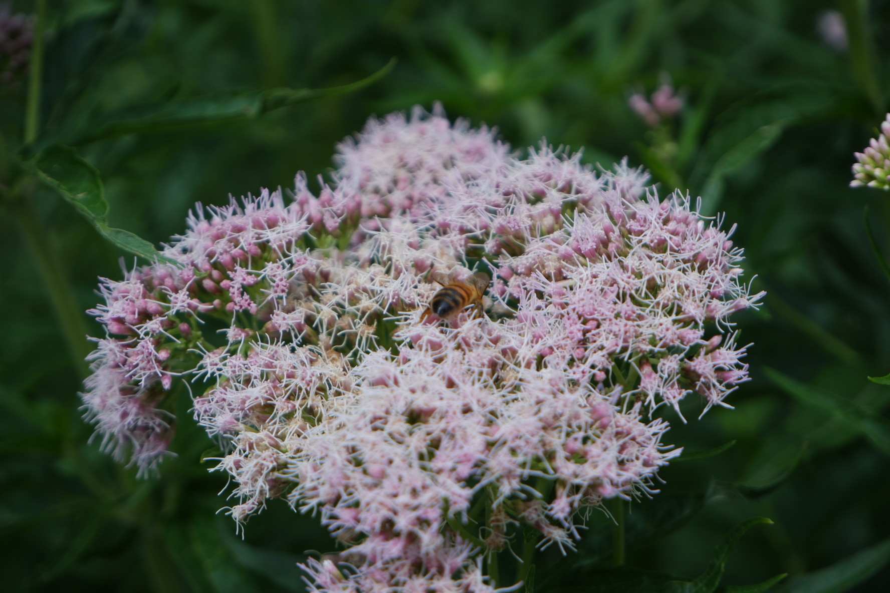
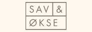
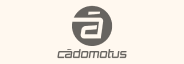

Hi, I'm Guido and I create digital products for real people

Projects
I’ve worked on a couple of different projects. Let me tell you something about them. They all have their own interesting twists and turns.
Photography
Lately I’ve been getting more and more into photography (This is usually exacerbated by a holiday). Let me use this as a way for you to get to know me just that little bit better.
more photos
arrow_outward




Brands
Some of the brands I've worked with.

